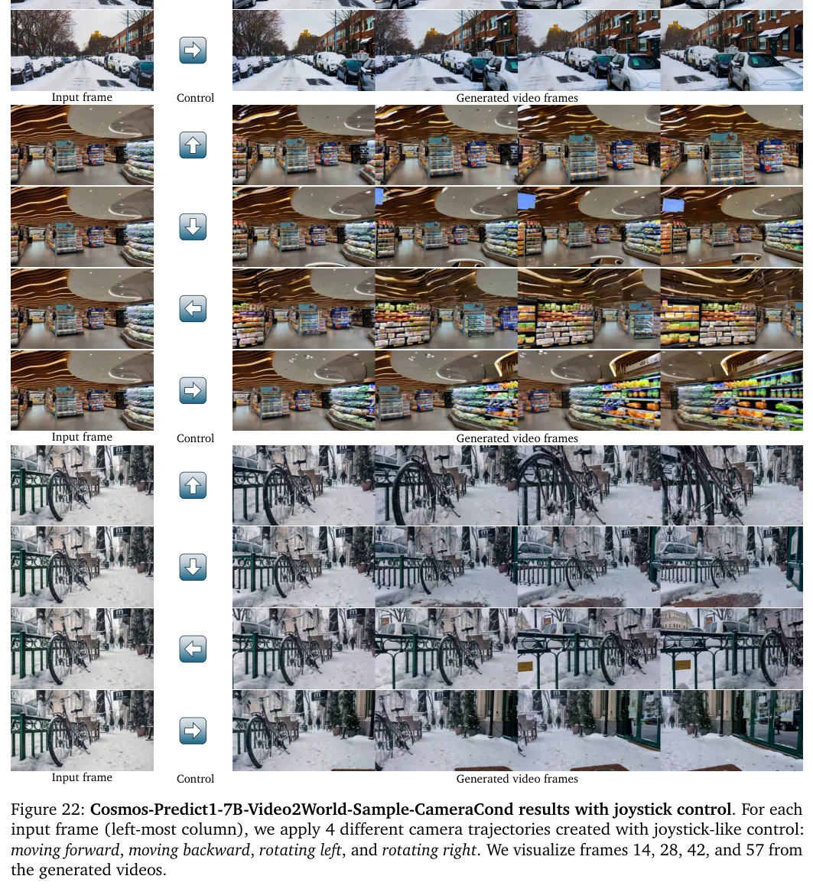
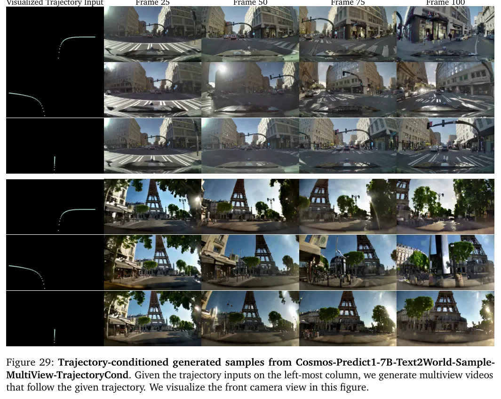

预训练 WFM 是"世界通才"（Ch5）。后训练＝用小数据微调到具体 Physical AI 场景。Cosmos 给了三个范例：相机可控 3D 世界、机器人操作、多视图自动驾驶。基于论文 §6 原文 + 原图。
核心范式（呼应 Ch0）：预训练通才 → 小数据后训练专才。原文强调"因为有预训练底座，后训练数据可以小得多"——这正是 foundation model 对自驾/机器人省数据的价值。
6.0 · 三个后训练范例总览 §6 / Table 21
场景
模型
条件 Condition
6.1 相机控制
Video2World-Sample-CameraCond
Text + Image + Cameras(位姿)
6.2 机器人操作
Video2World-Sample-Instruction / ActionCond
Text + Video / Action
6.3 自动驾驶
Video2World-Sample-MultiView
多视图(多相机) + Text/轨迹
6.1 · 相机控制 → 可导航 3D 世界 §6.1
原文："Through camera pose conditioning, we integrate camera control into Cosmos-Predict1-7B-Video2World, making it an effective 3D world simulator ... generating 3D worlds from a single reference input image ... produce temporally coherent and 3D-consistent video simulations from the specified camera trajectories."
把相机位姿作为条件微调进 WFM → 给一张图 + 一条相机轨迹，生成沿该轨迹漫游的、几何一致的 3D 世界视频（视角变化和场景 3D 结构对齐）。等于把世界模型变成一个"可自由移动摄像机的 3D 模拟器"。

Figure 22（原文）：Cosmos-Predict1-7B-Video2World-Sample-CameraCond results with joystick control. For each input frame, we apply 4 different camera trajectories: moving forward, backward, rotating left, rotating right ...
6.2 · 机器人操作 → 规划器 / 模拟器 §6.2
原文："fine-tune ... for two tasks: (1) instruction-based video prediction ... input is the current video frame ... and a text instruction ... output is a predicted video of the robot following the instruction. (2) action-based next-frame prediction ... input is the current video frame ... and an action vector ... output is the predicted next frame ... run autoregressively."
Figure 26（原文）：Action-based next-frame prediction samples on the Bridge dataset ... the predicted video frames closely match the GT video frames.
6.3 · 自动驾驶 → 多视图世界模型 §6.3
🚗 这一节对自驾最相关
原文："A world model for in-the-wild driving scenes ... a powerful simulation engine for training autonomous driving agents. As most autonomous vehicles are equipped with multiple cameras ... an ideal world model ... should also be a multi-view one, preferably matching the precise setup of the sensors in the target vehicle."
Figure 28（原文）：Text-conditioned samples generated by Cosmos-Predict1-7B-Text2World-Sample-MultiView, extended to 8 seconds by Video2World-Sample-MultiView. The post-trained world model effectively preserves its generalization ability ...

Figure 29（原文）：Trajectory-conditioned generated samples from ...-MultiView-TrajectoryCond. Given the trajectory inputs on the left-most column, we generate multiview videos that follow the given trajectory.